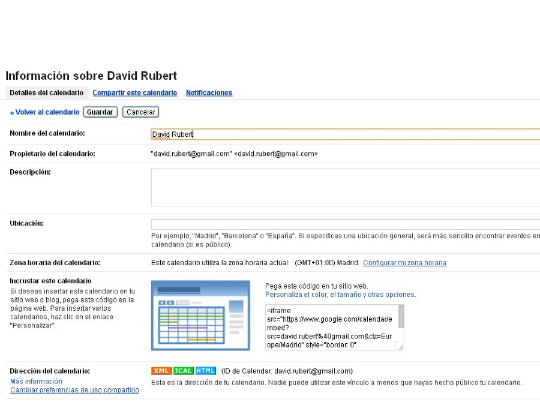
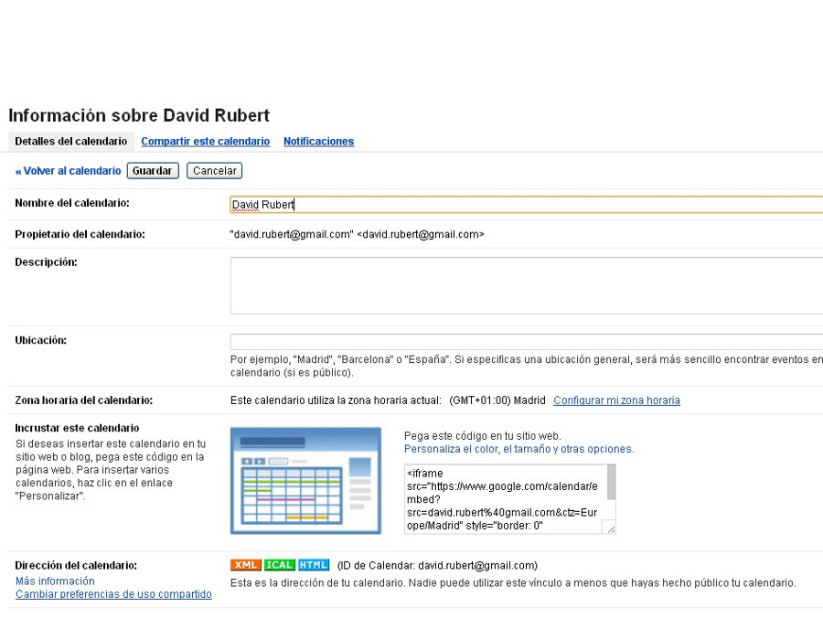
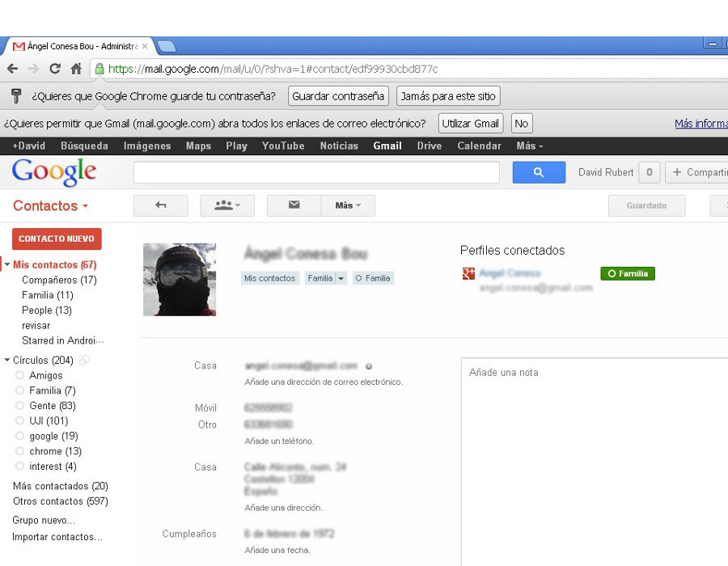

Trabajo colaborativo con Google Calendar
google
contacts
Y configuración de calendarios
Apreta la tecla → para avanzar.

Google Calendar

Ya conocemos el funcionamiento de los eventos, y las invitaciones a otros usuarios.
Veamos ahora otra parte esencial que nos quedaba, que es la gestión de calendarios, el calendario especial de tareas y los calendarios que nos han compartido o a los que nos hemos suscrito.
Entre estas funciones se incluye una parte fundamental como es la compartición de calendarios.
Gestión
de calendarios
Apreta la tecla → para avanzar.
Configuración global
Desde la configuración global de la aplicación podemos personalizar algunos parámetros de la aplicación para ajustarlos a nuestros gustos.
- Configuración general. Idioma, zona horaria, duración predeterminada de un evento, ubicación, tiempo de mi localidad, etc.
- Configuración de teléfono móvil. Si queremos que nos avise gratuitamente por SMS.


Cambia de foto con las teclas: ↑ y ↓
Práctica
Configuración global
Apreta la tecla → para avanzar.
Configuración global

- Accede a la configuración global, y activa la visualización del tiempo en el calendario en formato grados Celsius..
- Accede a la configuración de móviles, y establece tu número de movil para que te pueda mandar notificaciones SMS.
- Visualiza la lista de gestión de calendarios.
Configuración de calendarios
Apreta la tecla → para avanzar.
Propiedades de un calendario

Tener calendarios separados para diferentes eventos
nos permite gestionar mejor nuestra información personal, y sobre todo,
gestionar mejor la compartición de eventos. Veamos cuáles son las
principales propiedades que identifican un calendario.
- Color.
- Visualización. Podemos ver sólo un calendario,
u ocultarlo de la representación
- Alertas.
- Compartición.
Apreta la tecla → para avanzar.
Configuración de calendarios
Podemos realizar una configuración personalizada de cada uno de nuestros calendarios, lo que nos permitirá personalizarles los siguientes atributos:
- Nivel de compartición. Nos puede interesar que un calendario sea totalmente privado, pero otro que sea público, o compartido con algunas personas.
- Alertas. Las alertas por defecto del calendario podemos personalizarlas.

 


Cambia de foto con las teclas: ↑ y ↓
Práctica
Configuración de calendarios
Apreta la tecla → para avanzar.
Configuración de calendarios
- Cambia el nivel de compartición de tu calendario, hazlo público sólo con información de libre/ocupado. (Sólo si estás interesada/o)
- Define las alertas de los eventos añadidos a tu calendario principal, por SMS 1 hora antes.
- Observa cómo el profesor comparte un calendario con todas/os vosotras/os. Visualiza el nuevo calendario.
Google Contacs
Contactos
Apreta la tecla → para avanzar.
¿Qué es un contacto?
Contacto. Información estandarizada
sobre una persona, usualmente guardado en una libreta de direcciones.
Libreta de direcciones electrónica. Aplicación
informática que nos permite catalogar toda la información de nuestros
contactos.
Google Contacts es una libreta de direcciones
electrónica accesible vía web.


Cambia de foto con las teclas: ↑ y ↓
Ventajas de utilizar Google Contacts

- Ubicuidad. Si introducimos
una vez la información, la tendremos disponible en todos los
ordenadores o dispositivos desde los que nos conectamos.
- Sincronía. Añadir un contacto en el móvil
supone que lo tenemos automáticamente disponible en todas
partes.
- Integración. Se integra con todas las
posibilidades de comunicación: correo, mensajería instantánea,
telefonía.
- Desventaja: Tedioso/lento. La introducción de toda la
información de nuestros contactos es un proceso costoso y que se
puede alargar en el tiempo, pero las ventajas futuras son
innegables.
Acceso a Google Contacts
El acceso principal y más sencillo a la aplicación
para gestionar los contactos es vía web.
Accedamos por primera vez. Google Contacts está
integrado dentro del correo, así que deberemos acceder al correo
previamente:
http://gmail.uji.es


Cambia de foto con las teclas: ↑ y ↓
Trabajar con Google Contacts
La herramienta es muy sencilla en su concepto, dejándonos gestionar nuestros contactos y añadir toda la información relevante que consideremos oportuna sobre ellos.
Operaciones más importantes:
- Añadir contactos.
- Modificar/eliminar contactos.
- Grupo al que pertenece un contacto.
- Fusionar contactos.
Añadir contactos
Cuando añadimos un nuevo contacto podemos incluir
todo tipo de información asociada, veamos qué información es la
importante y cuál es opcional.
- Información importante: Nombre completo,
e-mail, teléfono
- Información complementaria: Foto, teléfonos
casa/trabajo, fecha de aniversario, dirección de casa, etc. etc.
Cambia de foto con las teclas: ↑ y ↓
Práctica
Añadir y corregir contactos
Apreta la tecla → para avanzar.
Gestionar contactos

- Accede a los contactos. Comprueba si ya tenías contactos añadidos.
- Añademe como contacto a tu lista "Mis contactos".
Grupos por defecto

Cuando añadimos un nuevo contacto se añade
autómaticamente al grupo Mis contactos. Veamos en qué
consiste cada uno de los grupos:
- Mis contactos. Grupo por defecto de nuestros
contactos reales. Este grupos es muy importante porque es el que se
sincroniza con dispositivos.
- Los más contactados. Los 20 contactos con los
que más nos comunicamos.
- Otros contactos. Contactos con los que nos hemos
cruzado algún correo, pero no queremos que formen parte de
nuestra libreta.
Grupos personalizados
Si queremos clasificar mejor nuestros contactos,
podemos crear grupos personalizados y asignar a ellos nuestros
contactos. Por ejemplo: familia, trabajo. etc.
Cambia de foto con las teclas: ↑ y ↓
Otras funciones

- Compartir contactos. Podemos compartir los conctactos con otras personas.
- Importar contactos. Si queremos hacer una importación inicial automática de contactos.
- Exportar contactos. De igual manera, podemos exportar nuestros contactos de para importarlos en otra aplicación.
- Fusionar contactos. Esta es una utilidad automática que nos detectará aquellos contactos que tengamos duplicados (misma persona, varias direcciones de correo).
- Restaurar contactos. Si hemos perdido los contactos accidentalmente disponemos de una copia de seguridad de hasta 30 días atrás.

Cambia de foto con las teclas: ↑ y ↓
Práctica
Apreta la tecla → para avanzar.
Contactos
- Añadete como contacto a ti mismo/a. Rellena información relevante, sabiendo que solo podrás verla tú.
- Crea un nuevo grupo. Llámalo Curso Google Calendar.
- Añade al grupo mi contacto y tu contacto.
- Crea un nuevo correo dirigido a "Curso Google Calendar", y añade un evento al correo, la próxima clase del lunes 29 de 13.30h a 15.00h.